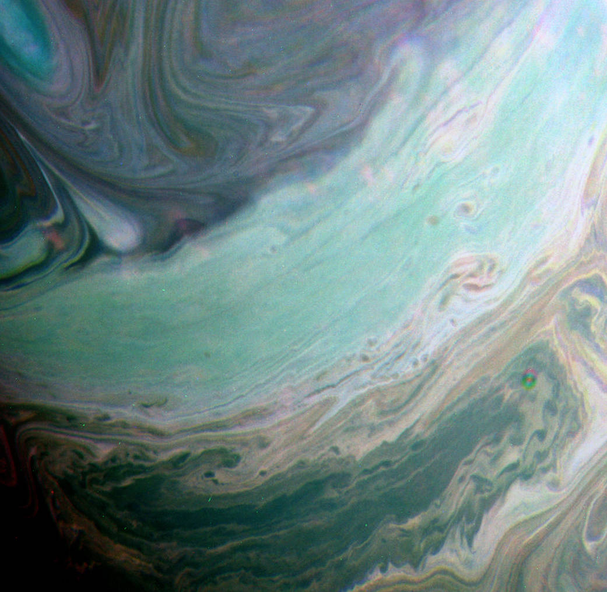
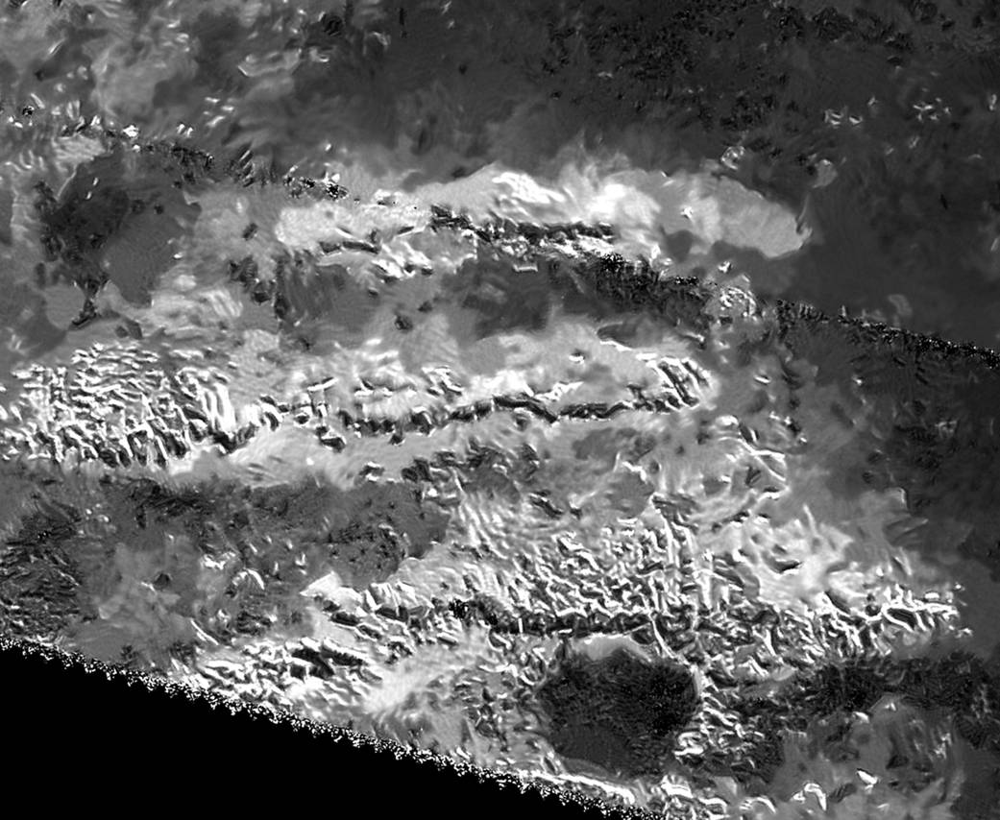
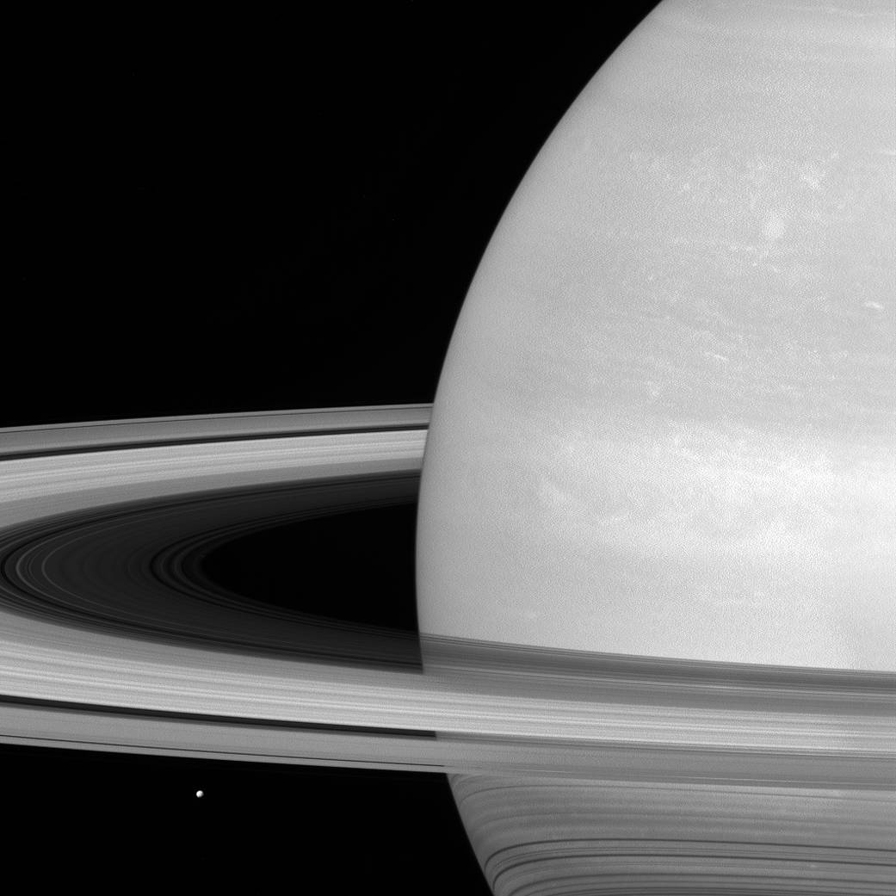
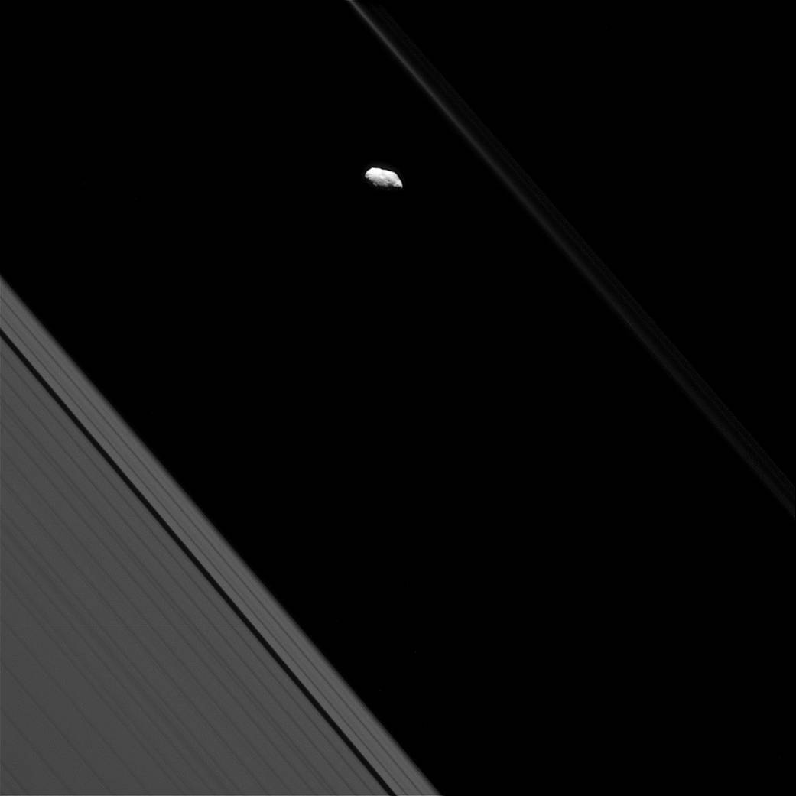

Infrared Saturn Clouds
This false-color view from NASA's Cassini spacecraft shows clouds in Saturn's northern hemisphere. The view was made using images taken by Cassini's wide-angle camera on July 20, 2016, using a combination of spectral filters sensitive to infrared light at 750, 727 and 619 nanometers.

Radar View of Titan's Tallest Mountains
The trio of ridges on Titan known as Mithrim Montes is home to the hazy Saturnian moon's tallest peak.

Tiny Mimas, Huge Rings
Saturn's icy moon Mimas is dwarfed by the planet's enormous rings.

Faint F Ring and Prometheus
Surface features are visible on Saturn's moon Prometheus in this view from NASA's Cassini spacecraft.